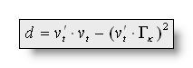

Segmentation of EEG Files into Micro-States
Segmentation is run first to extract template maps , which can be back-fit to the individual subjects on a second stage.
Brief introduction to the segmentation
Segmentation of EEG files into micro-states
Method used for the segmentation
Mathematical clustering
Temporal post-processings
The infamous "Optimal number of clusters" and the Meta-Criterion
How to run the Segmentation
Files Dialog
Parameters Dialog
Technical points & hints
Results
Segmentation in the Source Space
Brief introduction to the segmentation
Segmentation into micro-states is the process of finding periods of stability in the map representation of the ERP's. The data (usually grand means) are then segmented / cut where changes occur , and template maps are computed for each of the resulting segments to act as single representatives of the segments. The segmentation therefore produces:
-
a labeling for each time point and for each file, asserting to which segment it belongs to,
- a set of template (synthetic) maps that best represent each segment.
Given a set of averaged maps, it is possible to fit them back onto individual ERP's:
-
for each time point, it chooses which map fits the best, producing again a labeling,
- some variables are then extracted from this "fitting", such as the number of occurrence for each map, the first occurrence for each map, or when a given map was best fit. These variables are then used for statistics.
For the display of the segmentation, see all the Segments Display .
Segmentation of EEG files into micro-states
Methods used for the segmentation
It is actually made of three successive steps:
-
A mathematical clustering,
- Some temporal post-processings,
- Computing some quality measures.
Let's introduce briefly these three points:
1. Mathematical clustering
This is a well-known mathematical process, which does not account for the time dimension of the data. That is, data (maps) are put in a "bag", then picked from there without caring for their actual time stamp. Three methods are available for this stage:
-
The K-Means clustering
-
The
Atomize &
Agglomerate Hierarchical Clustering
(actually not anymore, obsolete)
- The Topographic Atomize & Agglomerate Hierarchical Clustering (T-AAHC)
2. Temporal post-processings
These are optional processings, which have the nice properties, for most of them, to account for the time dimension. They are totally independent of the type of clustering method used in the first stage. The methods available are (in this order):
3. Computing clustering quality measures
Cartool computes 9 different clustering quality criteria (as of 2024), and then combine them into a meta-criterion. This meta-criterion has a statistically more robust behavior, i.e. it outperforms each individual single criteria alone for correctly guessing the optimal number of clusters.
See the full discussion about clustering criteria .
Next, we are going to delve into the details of these three stages.
Mathematical clustering
The K-Means clustering
We summarize here the K-Means algorithm as it is used for the EEG data in Cartool. For the sake of clarity, we use practical numbers, by searching for 5 clusters out of 4 conditions of 100 time frames. Time is not relevant in this algorithm, so the total of 400 maps are just "put into a bag".
-
Initialization
-
Convergence loop
-
Compute new templates: average all the maps that have the same label.
-
Compute new labeling: test each of the 400 maps, and label (index) to which of the 5 new templates they correlate the most.
-
Compute a measure of quality of the current labeling ( Global Explained Variance, GEV) .
-
-
Repeat step 2, until the GEV doesn't improve anymore.
-
If the end results has a higher GEV than the current best one, keep it as the current best.
-
Repeat again steps 1 to 4, until enough repetitions have been done.
At the end, we have an estimate of the theoretically best segmentation.
As there is a random stage in this algorithm, we can only get close to the perfect solution. Also, running again the whole stuff will give slightly different results for the same reason. However, the process is reliable and is a standard procedure. See more technical points here.
The Atomize & Agglomerate Hierarchical Clustering (AAHC)
Important note: the AAHC is not used anymore in Cartool, only its modified version T-AAHC is available. However, the T-AAHC being based on the AAHC, the explanations below still hold.
The usual Hierarchical Agglomerative Clustering is a bottom-up approach. It starts with all maps being a cluster, then it merges the two closest clusters (of the current remaining ones) into a new one, repeatively. In this way, we have all the segmentations from the number of Time Frames down to 1.
Cartool implements a modified version of the Hierarchical clustering, specifically tailored for the EEG case, called the Atomize & Agglomerate Hierarchical Clustering (AAHC) .
It behaves the same as a regular hierarchical agglomerative clustering, starting with every map being a cluster. Then the main idea is to pick the "worst" segment of all currently availables, to atomize it (split it into indivividual maps), and to re-distribute these maps to the segments they fit most. This also results in all the segmentations from the number of Time Frames downto 1.
-
Initialization
-
Of the templates: each map is a template, starting therefore with 400 clusters.
-
Of the labeling: each map labels itself.
-
-
Removing one cluster
-
Pick the worst cluster: the one with the lowest GEV (Global Explained Variance) .
-
Atomize & distribute: take each map of this cluster, and assign it to the remaining cluster it correlates the best.
-
Compute new labeling: test each of the 400 maps, and label (index) to which of the remaining templates they correlate the most.
-
-
Repeat step 2, removing one cluster at a time, until we reach 5 clusters.
The main advantages of this method over the regular Hierarchical Agglomerative Clustering are:
-
It redefines the boundaries at each step, allowing small segments to remain .
- It gives a far better GEV on each segmentation, leading to a better choice of the optimum segmentation .
There are many advantages of this method over the K-Means:
-
It gives always the same results, if run again.
- It runs much faster.
- It spends its "segmentation power" into higher GFP areas, then giving the interesting segments earlier.
A final word could be: try both segmentations, and see the differences by yourself, it's not good to trust blindly (even Cartool). Actually, if there is something in your data, it will show up with both methods anyway!
See f.ex. a AAHC versus a K-Means for 18 segments (though it could be hard to compare directly):
The Topographic Atomize & Agglomerate Hierarchical Clustering (T-AAHC)
The T-AAHC is actually a further refinement of the above AAHC. The main difference being that the T-AAHC does not account for the powers of the maps, but only for their topographies , as the K-Means was doing.
Though the power of maps can be significantly used in many cases, there are other cases where they are not. If a given brain area is activated with only a low power, still, this is an interesting event to consider. Or if you want to re-segment a bunch of template maps merged together, they all have the same GFP so power is of no help in this case.
The T-AAHC takes the best of both the K-Means, by working only topographies, and the AAHC, by being deterministic and fast, without their respective drawbacks.
There is actually only one technical difference between the T-AAHC and the AAHC. At one point, both methods have to pick "the worst cluster" before atomizing it and re-distributing its parts to the other clusters:
-
The AAHC picks the cluster with the lowest GEV (Global Explained Variance), in which the GFP of course comes into account.
-
The T-AAHC picks the "less explained" cluster, the one whose maps correlate the worse to its template (cluster with the lowest sum of correlation).
The T-AAHC results are very close to the K-Means ones, see here an example for 15 segments (first one is the T-AAHC, second one is the K-Means):
Temporal post-processings
Temporal smoothing
This was the historical way to remove small segments. We kept it here, but we do prefer the Small maps rejection procedure instead, because its actual behavior is difficult to predict (very parameter dependent).
(You can refresh your memory with all the formulas here )
In the labeling process, when assigning a map
for each time point t, a distance d is computed, and
the map with the lowest distance d chosen:

To express the idea that micro-states tend to stay stables, we
introduce a smoothing factor in the distance d, by defining a
new distance d' that has to minimized the same way:
with Nbkt being the number of maps k in the
interval t-b to t+b (excluding time t itself),
and >0
being a weighting factor to control the smoothness.
equal to 0 gives d' = d, while greater values will
allow more smoothness. b is a window size, before and after
current time point t.
See f.ex. before and after a smoothing (Window half size of 3, strength of 10). Note that not all small segments have been removed:
Sequentialization
The mathematical clustering, as already explained, does not account for the time dimension. It therefore happens very often that maps attributed to a given cluster be in fact spread into very distinct time windows . See for example here cluster 3, or cluster 4:
The clustering did a good job grouping maps together, as the best trade-off for 8 clusters. But based on physiological evidences, segments sharing the same label but being temporaly disconnected do not reflect the same neuronal activity . We are then untitled to sequentialize those parts, i.e. to split the clusters with many non-overlapping windows into some sub-clusters.
The second generation of the sequentialization process works this way:
-
For each cluster index:
-
If there is at most one part of that cluster for each file, do nothing and continue to the next cluster.
-
"Cumulate vertically" all files for that cluster, to get a labeling telling for each time frame if that cluster has been found in at least one of the files.
-
Use this labeling to split the cluster into its timely disconnected parts.
-
See here the original clustering without sequentialization (above), then with sequentialization (below). Worth of interest is the splitting of old cluster 1 into new 1 and 9, old cluster 6 into new 7 and 11, old cluster 7 into new 13, 15 and 16. Also note that old cluster 8 remains unchanged (though renamed 14) due to the fact that all its parts overlap:
Merging correlated maps
This procedure blindy merges together all maps that are correlated above a specified threshold. To be used when you really want to force (and only when) the merging of some segments together.
Not to be confused with the re-merge step of the Sequentialization. This is another, and independent, processing.
See f.ex. before and after merging maps above a correlation of 0.92:
Small segments rejection
Repeatidely scan for the smallest segment, and if it is smaller than a given size, it will be deleted. This is done by splitting it into 2 parts, each part being the one that correlates the most to one the two neighbor segments. If there is only one neighbor, it is simply merged into it.
The size is given by the user, and shouldn't be greater than the smallest segment you logically expect from your experiment! (paradigm, physiology and sampling frequency dependent, at least)
See f.ex. before and after a rejection of segments shorter than 3 time frames (the coloring changed between the two):
The infamous "Optimal
number of clusters"
and the Meta-Criterion
Forewords
A point worth mentioning is that we said at the beginning that we were looking for 5 clusters. But actually, we have no a priori knowledge of how many clusters are right. So we have to run the segmentation sequentially, and independently, through a range of clusters, for example from 1 to 20 clusters. Each of these segmentations is perfectly valid in itself, but we wish to have a way to compare between them and select the "optimal one".
Many criteria exist, and have been developped based on different assumptions. However, it is also unfortunate that most of them are useless for our case. Indeed, a lot of criteria are not well suited to our type of data (normalized maps, equivalent to using a cosine distance). And if they do, they can still give unreliable results. All in all, on the 20 criteria that have been implemented in Cartool, only a subset of 9 criteria (since 2024) seem to be robust enough . But none of them does work accurately in all cases. So the approach taken in Cartool is to run all of them, and to merge their results into a compound called the Meta-Criterion .
These criteria and meta-criterion were discussed in this article:
Bréchet, Brunet, Birot, Gruetter, Michel, Jorge - "Capturing the spatiotemporal dynamics of self-generated, task-initiated thoughts with EEG and fMRI" - NeuroImage, July 2019
Note 1: the conclusions above are the results of 20+ years of working on this very specific subject. The selection of the best criteria and the formula of the Meta-Criterion were both the results of empirical observations, but, most importantly, of running simulations. These simulations where used to produce series of quasi-stable micro-states, of random durations, with a range of 3 to 15 seed maps, each correlated in a range of 10% to 90%, and Gaussian noise variance ranging from 50 dB to 0 dB (as much noise as data!). Only the criteria surviving these whole ranges of parameters were kept.
The 9 criteria
The best 9 criteria that proved to be the more reliable for our type of data are:
- Dunn, Robust version: An evaluation of the goodness of separation of all clusters, with a robust version formula.
- Gamma: An adaptation of Goodman and Kruskal, based on concordant vs. discordant clustered pairs.
- Gamma, second derivative of Robust version: Cartool robust version of the Gamma, then using the second derivative.
- Krzanowski-Lai Index: A ratio of the relative difference of the withinclusters dispersion.
- Krzanowski-Lai Index, Cartool version: Cartool implementation of the internal second derivative formula.
- Point-Biserial: A point-biserial correlation calculated between the distance matrix and a binary cluster index.
- Point-Biserial, second derivative of Robust version: Cartool robust version of the Point-Biserial, then using the second derivative.
- Silhouettes: Evaluation of the consistency of each cluster through its goodness of fit.
- Silhouettes second derivative: Second derivative of Silhouettes.
Naming convention for criteria listed in the .error.data files is the following:
- <CriterionName>: Official criterion taken from literature
- <CriterionName>R: Robust version of criterion
- <CriterionName>'': Second derivative version of criterion
- <CriterionName>R'': Second derivative of Robust version of criterion
- <CriterionName>C: Cartool own implementation of official formula
For example, current criteria names are: DunnR, Gamma , GammaR'', KL, KLC, PtBiserial, PtBiserialR'', Silhouettes and Silhouettes''.
Here are the main references for all of these criteria:
Charrad, Ghazzali, Boiteau, Niknafs - "NbClust an R package for determining
the relevant number of clusters in a data set" -
Journal of Statistical
Software
, 2014
Krzanowski, Lai - "A Criterion for Determining the
Number of Groups in a Data Set Using Sum-of-Squares Clustering" -
International Biometric Society
, 1988
Milligan, Cooper - "An
examination of procedures for determining the number of clusters in a data
set" - Psychometrika, 1985
Note 2: We used to use a Cross-Validation (CV) criterion for a long time. However, the extensive testing above clearly showed that it was not a reliable criterion. It was "undershooting" all the time, having a tendency to report fewer clusters than the real numbers. This could have induced previous analysis to under-estimate the actual number of clusters, especially for Resting States analysis. The CV was therefore removed from our VIP Club of Best Criteria - RIP.
Note 3: All criteria have been implemented to have the max value indicating the optimal clustering. Some criteria work the other way round, with the min value pointing at the optimal clustering. In these cases, results were simply inverted to also work with the max value.
The Meta-Criterion
The meta-criterion is simply defined as the median of all optimal numbers of clusters across all criteria :
- Each criterion max position is 1 vote
- The Meta-Criterion is the Median of all votes
Here is an example of the 9 criteria (top tracks), their geometrical mean, and the Meta-Criterion (bottom track). The horizontal axis being the number of clusters, the red squares show the maximum position of a given criterion:
Lowest number of clusters
The minimum number of clusters that Cartool can return is actually 4. We are going to detail the reasons why:
- All (except one) criteria are undefined for 1 cluster. Because most of them look at some sorts of separation between clusters, there needs to be at least 2 of them to do so.
- Many criteria are also undefined for 2 clusters, too. Because they look at differences between some sort of metric across successive clustering. As cluster 1's metric does not exist, it can not be used to compare with cluster's 2.
-
Many criteria will report 3 clusters as being the
optimal most of the time, which we know is wrong
from simulated data. The metric computed for 2 clusters shows from
observation that splitting the dataset into 2 parts is
really a bad clustering. Then the
metric computed for 3, 4, 5... clusters show some dramatic improvement.
But the biggest improvement is between 2 to 3 clusters. If the criteria
work with some sort of L-corner principle, or with a second-derivative
formula, then they will be highly biased toward 3 clusters.
It is enough that some criteria will have inaccurate reports for 3 clusters to also forbid the use of all the other criteria. Doing otherwise would introduce some disbalance in the Meta-Criterion voting system. - Therefore, with our type of data, the minimum possible number of clusters is 4 .
Note that there are no constraints on the maximum number of clusters, though (apart to be less or equal to the number of data points). In case of L-corner or second-derivative criteria, Cartool will silently expand the range of clusters by 1 or 2 to be able to compute these criteria. But they will not be part of the output files.
Afterwords
The optimal number of clusters is a difficult topic. We hope to provide a more reliable tool with the Meta-Criterion to guide the researcher. By using different criteria, each being selected for their appropriateness, and combining them together into a Meta-Criterion, we have a more reliable estimator of the optimal number of clusters.
For Resting States analysis, we recommand the automatic use of the Meta-Criterion when working in batches at the subject's level, i.e. finding the optimal number of clusters per subject. Then, on the group level, we suggest to use the Meta-Criterion more as a guidance, from which you have to interpret its suggestions. Indeed, it happens the result is really clear-cut, with a single max position of the Meta-Criterion. Easy case, no needs for second thoughts. However, other cases can show 2 different local max positions, suggesting that the data can legitimately be split with either of these 2 numbers of clusters. In this case, the type of data, the paradigm, or even experience should guide your final choice.
How to run the Segmentation
There are two ways to call the segmentation dialog:
-
Use the menu Tools | Segmentation of EEG files , and from there select the files to be segmented together (by Drag & Drop f.ex.)
-
Or link together the files to be segmented, Open the link, then click on the Segmentation button (obsolete, though)
Then a dialog in 2 parts appears:
Segmentation Files Dialog
|
Files Presets |
Pick the main type of processing you want to do:
|
|
Read some important informations about the meaning of Groups in the Segmentation context. You can use the very convenient Drag & Drop feature here. |
|
|
Number of groups: |
A counter of how many groups have been given. |
|
Add New Group of Files |
Enter a new group of file(s). |
|
Remove Last Group |
Does what it says. |
|
Clear All Groups |
Clear out all the groups at once. |
|
Read Lists from File |
You can direclty retrieve the lists of groups previously (see below). See also Drag & Drop. |
|
Write Lists to File |
You can save the lists of current groups into a file, in case you want to re-use them (much recommended!). See the file formats available. |
|
Sort Files within Lists |
A strange behavior of Windows is to not respect the order of the files dropped in a window. To help cure this silly habit, you can sort all the file names of all the groups already entered. |
|
Specify which time period to segment. |
|
|
No Epochs |
The whole input files will be used for the clustering. |
|
List of Epochs: |
Specify a list of epochs, each epoch being clustered independently from the others . In this very case, epochs overlapping or not is irrelevant. |
|
From |
From time frame (included)... |
|
To |
...to time frame (included). |
|
Add Epoch |
Actually inserting the specified epoch to the list. Don't forget to press on this button to enter the current values! If the list remains empty, the segmention process will be run on the whole dataset. |
|
Remove Epoch |
Popping out the last epoch from the list back to the edit fields. |
|
This will resample your dataset, generating a set of epochs from random data points. The intended use is for Resting States. The first time you select this option, Cartool will estimate the parameters below. The aim is to statistically cover 95% of your data, but you can change that, especially if the number of resampling is too high. See this paragraph about resampling. |
|
|
XX Epochs, |
The number of random epochs, each epoch being clustered on its own. You can change the number of epochs, and see the corresponding % of data coverage in real-time you'll get. |
|
of XXXX [TF], |
The epoch size. This amount of random time points are concatenated into each epoch. It might be interesting to you (yes, you) to know that the temporal ordering is preserved. Data points, although randoms, appeared in the epoch's order. You can change the epoch size, and see the corresponding % of data coverage in real-time you'll get. |
|
Covering XX% Data |
Combining the number of epochs by the epoch size, it is possible to compute the probability to resample any given time point. Therfore, we have an idea of the data coverage. For optimal results, it is of course better to cover most of your data. However, if the data were to be totally recurrent, you might ease up this number. You can change the % of data coverage, and see the number of epochs needed for that in real-time. |
|
(3) Files Options |
|
|
Output Base File Name: |
Specify here a basis for all the file names that will be generated during the segmentation process. |
|
A visual rendition of the segmentation, which also includes the GEV, GFP, and correlation of templates with the data. See the .seg specification. |
|
|
The Templates (or centroids) of the clusters, a weighted avarage of each clusters. See the .ep specification. |
|
|
Original data splitted by clusters. Currently in .sef format. |
|
|
Counterparts of each original file, where the data has been replaced by the corresponding template at each time frame, so it is easy to visualize the temporal evolution of multiple conditions. The power of the synthetic maps also follow the power of the original data, too. Currently in .sef format. |
|
|
Resting States: |
The following options are aimed at improving the Resting States batch processing. |
|
Force Single Files Processing |
Each file from each input group will be processed individually . So basically, it doesn't care for conditions, and you can Drag&Drop all your files at once. |
|
Common Best Clustering Directory |
After each file has been processed, be it the whole subject or some resampled epoch, the main results are copied to a Best Clustering directory . Files copied are the .error.data, the optimal templates file , and the corresponding verbose .vrb file. Directoy name ends is <base file name>.Best Clustering A useful trick is that you can run multiple Cartools in parallel, each with their own subset of subjects. You can then set the exact same output base file name in all of them, and select the Common Best Clustering Directory. These Cartool instances will therfore write concurrently to the same output directory. They will not overwrite each others results, though, as file names should be unique across subjects. This way you will divide the total processing time by the number of Cartool you run... |
|
+ Delete Individual Directories |
This option is only available when the previous one is selected. If selected, once the optimal results have been copied to the Common Directory, the current file's results will be deleted. At a subject's level, we usually don't care for all the non-optimal clustering results. As these could amount to a lot of disk space, it is totally OK to dispose of them. |
|
<< Previous | Next >> |
Use these buttons to navigate through the previous and next dialogs (if any). See which current dialog you are in, and to which other dialogs you connect, in the tab-like part at the top of the dialog under the title. |
|
Process |
Runs the segmentation. This button remains disabled until all the parameter dialogs have received enough (and consistent) informations . |
|
Cancel |
Quit the dialog. |
|
Help |
Launch the Help to the right page (should be here...). |
Segmentation Parameters Dialog
|
(1) Clustering Parameters |
|
|
Computation Presets: |
Pick your choice from the drop-down list, according to your data type and experiment. This will set the input data type for you (can not be manually changed) and the segmentation parameters with the most common values (which you can manually tune-up). |
|
(1) Data Preprocessing |
All sorts of preprocessing to tenderize your data before the data munching. |
|
Spatial Filter, using XYZ file: |
Applying a Spatial Filter to the data, to remove outliers and smooth out the noise . K-Means clustering doesn't like noise, lower SNR data in input also leads to lower SNR results... However, it is not recommended to apply this filter more than once! If your EEG preprocessing pipe-line already included the Spatial Filter, you shouldn't use it here! Cartool tries to be smart here, if your files contain the characters "Spatial" in their names, it will automatically disable this option. |
|
Using Whole Data |
Using all of the data specifed from the epochs options. So either the whole file, some specific time interval, or some resampled epoch. But the file given to the clustering will be used as a whole. Mainly used for ERPs analysis. |
|
Using only GFP Peaks Data |
Keeping only the data at local GFP Max positions. These are the data points with the higher SNR, and centered on the segments' most stable part. Data points with lower GFP are usually transitions due to dipoles oscillations, when not at their peak values. This is used only for Resting States analysis. Note that the GFP Max extraction part is done before the resampling . All GFP Maxes are first concatenated into a temp file, which is then resampled. Resampling disrupt the time line consistency, therefore a local GFP Max can not be correctly retrived. This also ensures that all the resampled epochs will have the same size. |
|
Automatic |
The GFP track is computed automatically from the input file, then the GFP Maxes positions extracted. |
|
At Markers: |
The GFP Maxes might have already been computed, or the user has some specific requirements about what data points to keep. With this option, you can specify whatever marker names for the time positions to be kept. |
|
But Excluding Bad Epochs: |
Select this option to skip some time periods from your data. Data preprocessing is never perfect, and some parts of the data should still be ignored. Note that this step is done before the GFP Max and the resampling. |
|
Automatic |
Cartool has a bad epochs automatic detection (you might want to give it a try from the EEG Window, under Markers|Scanning Bad Markers menu). This option is seen as a last chance before the clustering. It would definitely be better to run the detection before, then visually assess the bad epochs, then only run the clustering. |
|
At Markers |
Give the marker names of the bad epochs to be ignored. Either somebody did put some markers manually to isolate the bad epochs, or have already run the automatic bad epochs detection. |
|
(2) Clustering Parameters |
|
|
This is the input data type, set by the Presets list above. |
|
|
Only Positive |
Data consist of positive only, scalar data. This could be spikes from neuron recordings, or the Results of Inverse Solution, f.ex. This will logically turn off the Polarity & References options. See this point on positive data and also this point. |
|
Signed |
Signed scalar values, like, you know, EEG. |
|
Vectorial |
Used on Inverse Solution .ris data files, when the results are vectors for each solution points. See this point about segmentation in the Inverse Solution space . |
|
Data reference |
|
|
No Reference |
Data are used as they come from files, no changes occur. |
|
Average Reference |
Data are average reference-d. |
|
Maps / Patterns Polarity: |
|
|
Ignore |
Polarity of maps does not matter, so ignore it. Inverted maps are considered the same (same underlying generators, but with reversed polarity). Used for spontaneous EEG recordings. |
|
Account |
Polarity of maps matter, that is, inverted maps are indeed considered as different. Used for ERPs. |
| Clustering Method: | |
|
K-Means |
See K-Means clustering. |
|
Number of Random Trials |
Number of time that the process of randomly picking maps is initiated ( steps 1 to 4 ). Of course, higher values increase the chance to converge to the optimal solution, but at the cost of more processing time. |
|
T-AAHC Hierarchical Clustering |
See Topographic Atomize & Agglomerate Hierarchical Clustering . |
|
|
|
|
From |
Minimum number of clusters, keep it to 1. |
|
To |
Maximum number of clusters, usually around 20 for ERPs, and 12..15 for Resting States. You might want to increase that number if, f.ex., your ERP epoch is longer than ~500 ms. Or if the optimal max appears quite close to the higher limit. Of course, the higher the maximum number of clusters, the longer the processing time. Decreasing this number is a bit more delicate. By doing so you might miss the optimal clustering, without any clue about the miss! The range suggested by Cartool is based on our experience at the FBMLab, you have to have some good reasons to decrease that range. |
|
Labeling at Low Correlations: |
If selected, you can specify a minimum correlation threshold for data points to be assigned to a given cluster. Default correlation threshold is set to 50%, which is quite conservative. See this outliers rejection paragraph. |
|
This option can help you computing the inverse solution of your EEG template maps , or the EEG maps from your inverse templates if you run the clustering on RIS files. There are more explanations here. |
|
|
(3) Temporal Postprocessing |
|
|
Scans the clusters, and split those who belong to the same cluster but don't overlap in time. |
|
|
Blindly merge together clusters that are correlated above a threshold. This is quite a harsh post-processing, use with care. |
|
|
If Correlated above: |
Specify the correlation threshold as a percentage. |
|
Redo the labeling, but with a temporal smoothing factor . |
|
|
Window Half Size: |
The temporal smoothing operates with a sliding window, which you specify here the half size (in time frames). The actual window size is therefore ( 2 x W + 1 ). |
|
Strength (Besag Factor): |
Strength of the smoothing, actually the Besag factor from the article on the segmentation process. |
|
Deletes short segments, and fuse them with their 2 respective neighbors. |
|
|
Shorter than or equal to: |
Size below which a segment is removed. |
|
<< Previous | Next >> |
Use these buttons to navigate through the previous and next dialogs (if any). See which current dialog you are in, and to which other dialogs you connect, in the tab-like part at the top of the dialog under the title. |
|
Process |
Runs the segmentation. This button remains disabled until all the parameter dialogs have received enough (and consistent) informations . |
|
Cancel |
Quit the dialog. |
|
Help |
Launch the Help to the right page (should be here...). |
Segmentation - Technical points & hints
Groups of Files in the Segmentation
Each group of files provided in the list will be processed independently of the other groups . Conversely, all the files within a group are concurrently segmented together (a different approach from the Fitting).
In this way, we have a sort of batch processing, where you can input groups with different number of files, and / or different dimensions (in time, in electrodes). However, the same segmentation parameters will apply for all these segmentations. The output directories / files will be numbered if more than one group is given.
You can Drag & Drop these files directly from the Explorer:
It is strongly recommended to use these Drag & Drop features which will tremendously ease your work:
-
Any EEG files. Dropping many EEG files at a time will create a new group of files . Dropping a single EEG file will update the template file .
-
.lm files,
each file being scanned and its content itself treated as a
group
of files
.
- .csv files, as a list of groups previously saved.
File formats to save or retrieve the lists of groups
-
.csv file
- .txt text file, with a similar format as the .csv format above, but separators used are tabs instead of commas (then rather a .tsv format).
Maps
In all the segmentation and fitting algorithms, normalized maps are used as only the shape/topology of the maps is of interest, and not their strengths. The only exception is when generating an average map to represent a given segment, the original maps are taken to therefor make a GFP-weighted sum, giving more emphasize to maps with higher GFP (which are likely to be less noisy and of higher interest).
Resampling your data - why should I do that?
In the Files Dialog, you can set some resampling option, aimed at Resting States processing. Here are the main points why you should favor the resampling (apart from looking cool, of course):
- All resampled epochs will have the same size. Although files are usually of comparable sizes across subjects or conditions, nothing guarantees that. And the bigger the file, the less likely the K-Means will produce reliable answers. Using the original files, without resampling / cropping, could therefore produce results with different levels of quality. While equal size epochs should produce comparable quality in terms of clusters separation.
- The bigger the file, the more random bootstrapping the K-Means will need to ensure a reliable answer. This is due to the very random nature of the Lloyd's algorithm. The number of trials needed for a correct clustering varies exponentially with the number of data points! By using smaller files, for the same amount of random trials, the K-Means will produce more reliable clustering.
- Estimating the best optimal of clusters is a difficult endeavour. By repeating the analysis of the same subjects multiple times, we also reduce our chance of picking the wrong number of clusters . Not only due to the repetition process itself, but also due to the resampled data being slightly different across epochs. Stated otherwise, this also allows for resampling of the optimal number of clusters .
- Resting States data are supposed to be cyclical, the brain looping through some major processes again and again. These processes are what the clustering is trying to characterize. Resampling cyclical data is perfectly fine and should give the same results as a correct, full-size clustering.
- The K-Means algorithm is as a classifier. At its core, it compares maps made of hundreds of electrodes . With this amount of dimensions, most of the search space will appear empty, the so-called cursed of dimensionality . By using the resampling technique, we can boost the number of data points available at the Group level clustering . The increase ratio being roughly the number of resampling, which means going from a hundred maps to many thousands is a real plus.
- Smaller files analysis will run faster, with smaller memory footprint.
TL;DR: Shorter files work better, repeating the K-Means multiple times is better, using different random parts of the data improves both the K-Means and the optimal number of clusters.
I hope I made a case to use this resampling technique. Resting States analysis is not an easy task, and the results appear to be much more unstable than ERPs. This is why we should put more chances on our sides to find the optimal clustering. You can still ignore it, though, f.ex. if you want to reproduce some previous results where it was not available.
Global Explained Variance computation
During the segmentatioin process, the GEV value is computed across all the provided files, as if they were aggregated into a single one . It gives a global quality measure of the overall segmentation process, plus the relative weight/contribution of each segment into the global segmentation.
However, during the fitting process, the GEV is computed on a set of groups that represent some natural within-subjects size , which in turns depend on your paradigm. It can even be computed on a per-file basis , if subjects were not the same across all groups.
This has roughly the same consequence as for GFP Normalization , in that the denominator part of the equation will be different according to the number of files it is computed across. Not that the absolute sum is of any importance, but rather that individually scaling each file could introduce some artifacts if some big component was to be found in one file and not into the others. Which could then make the other components appear relatively weaker in the other files, thus wrongly generating significant statistical differences.
Outliers rejection
By construct, and no matter what, the K-Means clustering will assign every data point to one cluster, the one it correlates the most. But sometimes, some data points will not correlate well with any of these clusters. To avoid degrading the existing clusters with outliers, data points whose best correlation are still below a given threshold will not be assigned to any cluster .
Data points too far from any clusters' cloud will be labeled as unclassified . It can also be seen as a hidden, additional "garbage" cluster used to gather all of the outliers. Cluster that will be subsequently ignored for the remaining computations (centroids, criteria...).
The default correlation threshold is set to 50%, which is quite a conservative value. Hence, no more than a few % of the data should be classified as unlabeled in the end. Check with the verbose file for the amount of unlabeled data, and if too high, then something might be wrong with the data. If you increase the threshold, you might end up with too much rejection. If you decrease it, you might incorporate outliers back to the clusters.
Alternative templates
(The following explanations are for the regular EEG clustering)
Cartool provides an option, the "Alternative templates" , to compute the corresponding localization for each EEG template map.
First of all, it expects that all of your input EEG files have some RIS files counterpart, f.ex. as generated by the RIS Computation Toolbox . Cartool expects an exact one-to-one match between each EEG and RIS file names (similar file names, identical directories). Cartool will complain if some files appear to be missing. However it will not whine at all in case no counterpart files were found at all , it will just skip this option silently.
The clustering will then run as usual at the EEG level, without any difference. The final templates are computed as the average of each clusters' cloud, as usual. Then, the labeling from the EEG clustering will be applied on the alternative dataset , allowing to compute the average of the corresponding inverse solutions. This way, each EEG template map will have its corresponding inverse template.
Here is a simplified diagram, showing 18 EEG maps clustered into 3 groups. Top part shows the results of the regular EEG clustering, with the 3 clusters containing each 6 maps, and below them their average maps. Bottom part is the alternative dataset, here the inverse space. It is using the same labeling ("map numbers") to compute the average brain activities corresponding to the average EEG maps :
Note 1: This option is actually working both way. If you run the clustering on the RIS data, then the alternative dataset will be the EEG maps. The main templates will be brain regions, the alternative templates the corresponding EEG maps.
Note 2: You can also compute the average inverses through the Fitting, by saving all data per clusters. Then running the RIS Computation Toolbox with the proper Preset.
Segmentation - Results
(See also the Segments display)
-
One .error.data file which holds a summary of the whole range of segmentations , showing the error being made at each individual segmentation.
This file is the most important one (with the verbose file) from the overall segmentation, and acts like a dashboard to help you decide which segmentation is the most optimal one. -
One general verbose files <basefilename>.vrb, with all the parameters being used. Keep this precious file with your data, this is the only way you can exactly redo your results!
Then some more detailed verbose files <basefilename>.<#clusters>.vrb for each number of clusters within the input range , with more informations about the clustering results for each number of clusters. -
In case of Segment output, some <basefilename>.<#clusters> .seg (Segments) files, that can be opened by Cartool to visually render the results of each individual segmentation.
At the first opening, it first displays the GFP’s of the files segmented, filled with a color scheme representing the segment numbers. Scrolling down with the down arrow will cycle through the Dissimilarity, the segments numbers, the GEV split segment by segment, and the Correlation between the template map and the map for each time frame. For example, here is one showing the GFPs:
-
In case of Template output, <basefilename>.<#clusters> .ep files (or <basefilename>.<#clusters>.ris files for inverse space segmentation), containing the template maps for a given number of clusters. These are the centroids of the clusters, and each template index correspond to the segment index of the .seg files (above).

-
In case of Data Clusters output, some <basefilename>.<#clusters>.Cluster<#>.ep files (or .ris files according to the input files) in the More directory. Each file holds all the original data splitted by cluster index.
-
In case of Synthetic Ouput, some <basefilename>.<#clusters>.<originalfilename> .ep files (or .ris files according to the input files) in the More directory.
Each time point of the original data is replaced by its corresponding template map . The original power is then applied to new time point. This is useful to visually compare the before and after segmentation.
Here we can see some original data (top) clustered in 4 groups (colored boxes), and the corresponding synthetic maps (below):
Segmentation in the Source Space
Instead of using EEG data, it is possible to directly segment the Results of Inverse Solution . Instead of the electrical values at each electrode, it will use the estimated dipoles at each solution points within the brain.
This part has to be totally rewritten due to current evaluations...